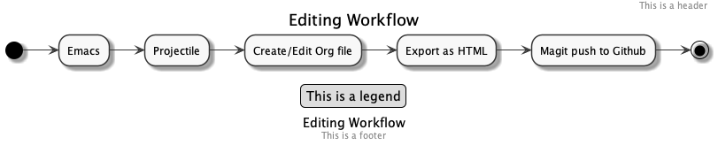

Workflow
Table of Contents
Overview

Export as HTML
Org (space m), Export (e), HTML (h), Ouput file and Open browser (o) <space> m e h o
Emacs
Best to open from dock as a graphical application. When run from terminal images won’t display inline.
Projectile
Projectile (space p), browse (.), select existing file or type file name and hit return for new file.
Create/Edit Org file
Make sure file extension is .org. TODO Figure out how to create and use project templates pre-filled with headings
Export as HTML
Org (space m), Export (e), HTML (h), Ouput file and Open browser (o) <space> m e h o
Magit push to Github
Magit (space g), Status (g)
Create New branch
Add New Files to Tracked Files
- Look at list of Untracked files
- Press s for each file to Stage it (include in project)
Commit Staged Files
- Look at Staged Changes list
- Press c c to Commit staged files
- Type comments in the notes
- Press Ctrl-c Ctrl-c to complete commit
Create Pull Requuest
Push Committed Changes to Github
- Still working on repeatable steps for this
- Seems like a pull from main is required to sync with local first
Press P for Push then m for matching branch
TODO Learn more about pushing